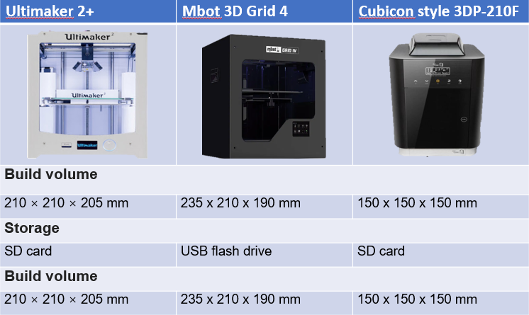

3d printing
3D printing is a form of additive manufacturing as it creates objects by adding layer upon layer of material until the shape of the object is formed. 3D printing is suitable for producing prototypes and small products that are expensive to produce using other manufacturing processes. However, compared to manufacturing on a large-scale, 3D printing is much slower and more costly.
Pros of 3d printing
3D printing can produce structures, such as complex or hollow interior sections, that are impossible to produce using non-additive processes. Most of the 3D prints are made up of up lots of hollow sections to save money, material and printing time, while still maintaining a certain structural integrity.3D printing also generates less waste than subtractive processes and the filaments that are used can be eco-friendly, such as PLA filaments
cons of 3d printing
3D printing is the slow and tedious process, and it will be very expensive for large-scale production. Another disadvantage is that 3D printed parts are not strong and have low heat resistance.Tiny holes in the wall surfaces are resulted from 3D printing, which results in contamination to easily occur.
Below are the 3 types of 3d printers that we have in SP. The 3d printer that I use most often is the Ultimaker 2+
Below are 2 items that i have 3d printed and their respective fusion 360 sketches

.png)
This is the first item, it is a keytag with my name on it

.png)
This is the second item, it is a sphere in box.